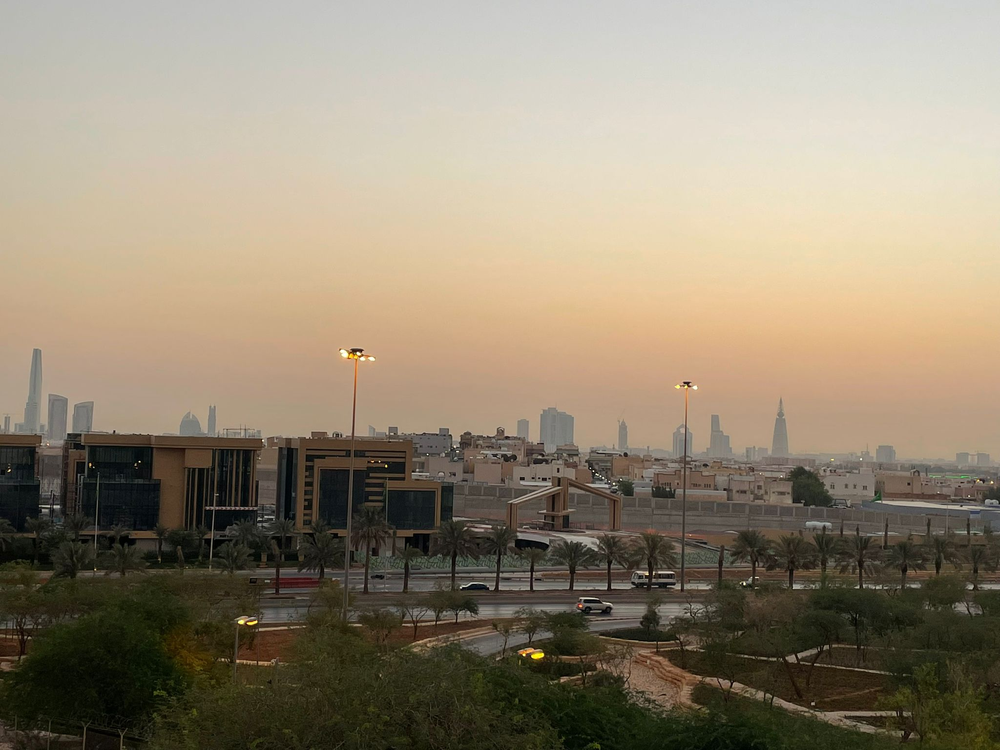

Saudi Civil Defense lifts Riyadh danger alert after renewed Houthi attacks
Authorities gave the all-clear in the capital on Monday; debris from an intercepted attack damaged an Aramco building on Sunday, with no casualties reported.

What happened
Saudi Arabia's Civil Defense said on Monday, November 9, 2026, that danger had passed in Riyadh shortly after issuing an alert about a possible threat. Reuters and the Saudi newspaper Arab News reported the announcement. The agency urged residents to continue following safety instructions and avoid gathering or filming in areas at risk. The warning came a day after missiles and drones launched by Yemen's Houthis were intercepted over parts of Saudi Arabia. On Sunday, November 8, debris from an intercepted attack damaged windows on several floors of an Aramco office building in Riyadh's financial district. Saudi Arabia's Energy Ministry said damage was limited and no deaths or injuries occurred in that incident. Saudi officials reported air-defense interceptions over the capital and other regions. The Houthis claimed attacks, although statements about targets and outcomes should be attributed to the parties making them.
The Crow's analysis
The warning and subsequent all-clear underline the importance of timely official guidance during aerial threats. Intercepted projectiles can still produce dangerous debris, as the damage to the Aramco building illustrates. Repeated launches increase regional instability and raise concerns about the safety of economic and energy infrastructure. However, the lifting of Monday's alert does not establish that the wider escalation has ended or that another attack is certain.
Counterpoint
The all-clear was a specific Civil Defense safety update, not a ceasefire announcement. Accounts of responsibility and targeting are attributed to Saudi authorities and the Houthis, while independent verification of military details remains limited. The accompanying photograph is an archival view of Riyadh taken in April 2022 and does not depict the attack.